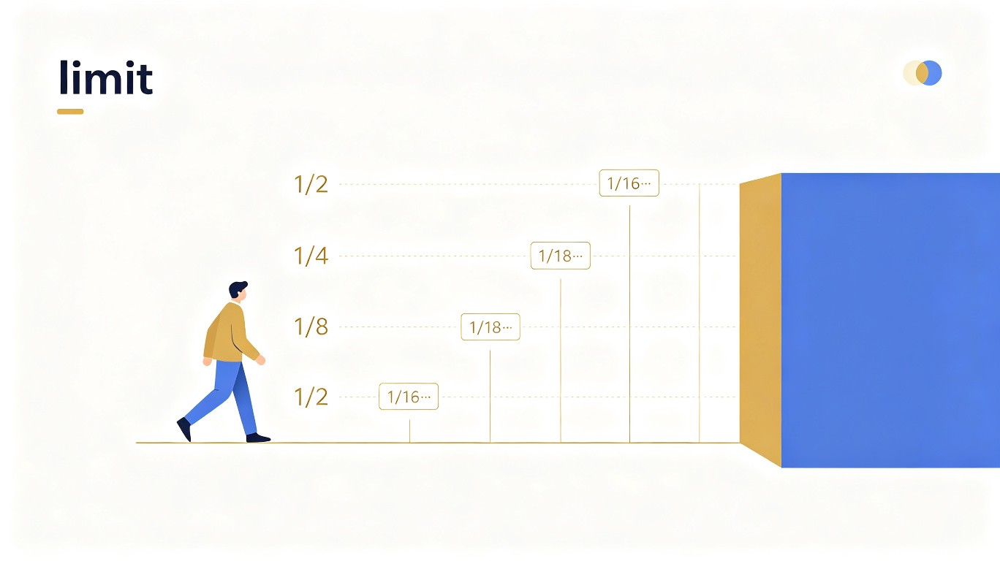
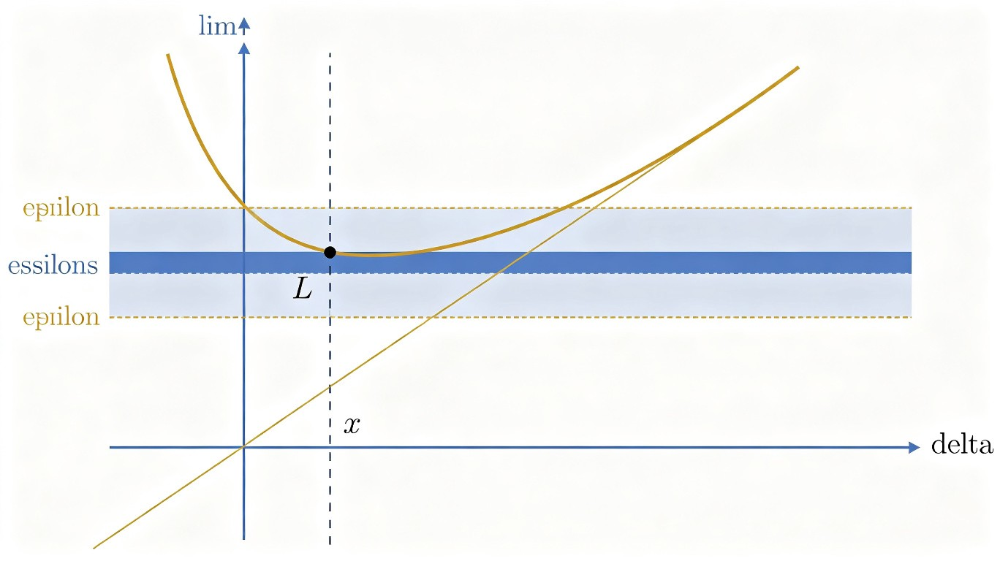
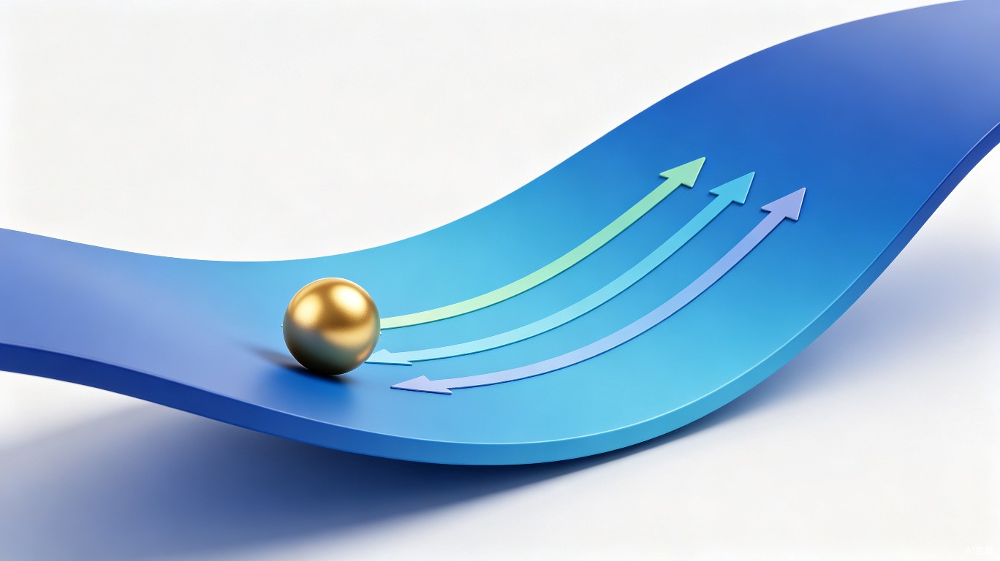

面向社会人士的高等数学 AI 学习助手
用最温暖的方式，攀登最美的数学阶梯
领略数学之美，纯粹出于对数学的好奇与热爱，探索公式背后的优雅与哲理。
适合所有对数学感兴趣的终身学习者。课程侧重数学思想与美学，连接现实与抽象之间的桥梁。
系统学习微积分、线性代数、概率论，为 AI 和机器学习打下坚实的数学基础。
适合有编程经验但数学基础薄弱的同学。课程从零开始，侧重数学在 AI 中的实际应用。
掌握统计学核心概念与数学工具，让数据分析师之路更加扎实。
适合从事或希望从事数据分析的同学。课程重点在概率统计与实用数学方法。
面向工程领域从业者，强化微积分与微分方程在工程中的应用能力。
适合工程师、技术人员。课程侧重工程数学的实际应用与计算。
选择适合你的学习路径
分章节掌握核心概念
渐进式解题训练
检验学习效果
记录每一次进步
TRAE AI 创造力大赛 · 学习工作赛道
想象你正在朝着一面墙走去。每一步，你都会走到剩余距离的一半：
第一步走了一半，剩下一半；第二步走了四分之一，剩下四分之一…… 你永远"碰不到"那面墙，但你知道自己在越来越接近它。
这就是极限的思想 —— 我们关注的是"趋近的过程"，而不一定是"到达终点"。

就像你把蛋糕分成两半，再分一半，再分一半……虽然你永远不会分完，但你清楚地知道：蛋糕块越来越接近零。
在数学中，我们用 lim 来表示这个过程。上面的公式就是在说：当 x 越来越接近 0 时，sin(x)/x 的值越来越接近 1。
数学家用一种精确的方式定义极限，这就是著名的 epsilon-delta 语言。听起来很吓人？别担心，我们来简化理解它。

用大白话来说：
只要 x 和 a 足够接近（距离小于 delta），那么 f(x) 和 L 就会同样接近（误差小于 epsilon）。
换个说法：无论你要求多精确（epsilon 多小），我总能找到足够近的 x，让函数值满足你的精度要求。
这是几个基本的极限性质。记住它们，以后做题会经常用到。
你不需要一开始就完全掌握 epsilon-delta 定义。先理解"越来越接近"这个直觉，等学到更深的内容时再回头强化。
极限不只是课本里的概念，它在你每天使用的技术中无处不在！
梯度下降 —— AI 的核心引擎
AI 模型的训练过程本质就是"一步步逼近最优解"。机器学习用梯度来决定前进的方向和步伐：

这里的 lim 意味着：学习率要足够小，才能保证我们真正"趋近"最小值而不是跳过去。
导数 = 极限的产物
导数本身就是用极限定义的！没有极限，就没有导数；没有导数，就没有机器学习中的优化算法。
ChatGPT、自动驾驶、推荐系统 —— 所有 AI 背后的数学基础，都离不开极限与微积分。你现在学的内容，正是理解这些前沿技术的第一步。
求极限经典题目：sin(x)/x 当 x 趋近于 0
3 道关于极限基础概念的选择题，检测你的理解程度
每一次学习，都是向上的一步
第一章：极限（1/8 章）
每一个数学概念的掌握，都是你通往更高阶梯的一步。
保持好奇心，继续前进吧！